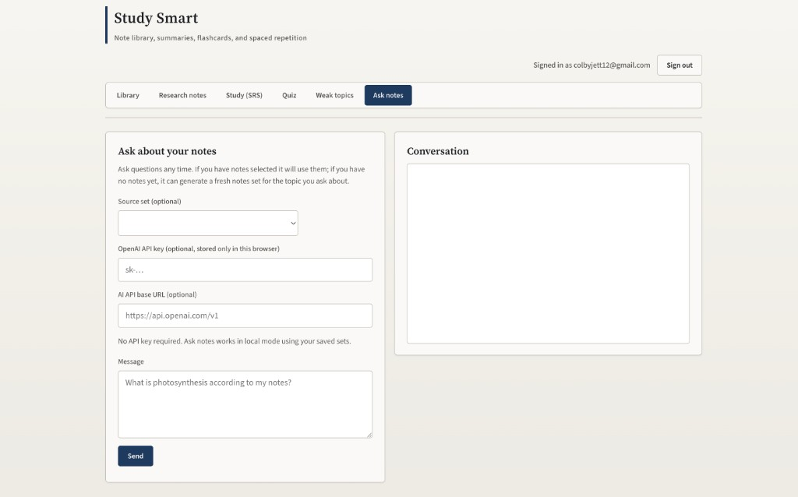

Library + note processing
Ingests text or PDF-backed content, then chunks material for summaries, flashcards, and context-aware Q&A.
Study Smart turns class notes into structured summaries, flashcards, quizzes, and weak-topic insights. It blends browser-native storage, spaced repetition logic, and optional AI/web augmentation into one streamlined learning workflow.
Study Smart is built to move students from passive review to active mastery with a clear, repeatable loop.
Ingests text or PDF-backed content, then chunks material for summaries, flashcards, and context-aware Q&A.
Turns long notes into concise study outputs so students can shift from reading to doing in the same session.
Implements spaced repetition scoring (Again/Hard/Good/Easy) to improve long-term memory instead of short-term cramming.
Uses quiz outcomes to reinforce understanding, identify misconceptions, and drive the next review cycle.
Prioritizes the student’s own material before external data, preserving class alignment and teacher-specific vocabulary.
Adds Wikipedia and Tavily-supported context when notes are thin, outdated, or missing supporting explanations.
Supports tutor answers, note refinement, and quiz generation with one consistent interface and shared context.
API keys stay in browser storage on-device, keeping setup simple while avoiding accidental hardcoded credentials.
Works without a backend account system by storing user progress, docs, and study state directly in the browser.
Keeps the full flow in one app shell (library, study, quiz, insights, chat), minimizing context switching.
Weak-topic tracking gives students a concrete “what to study next” signal instead of generic recommendations.
Simple deploy model, lightweight dependencies, and clear feature boundaries make it practical for school demos and iteration.
These captures show the real app flows students actually use: secure sign-in, quiz practice, and ask-notes tutoring.



This implementation intentionally stays lightweight while integrating modern learning workflows. It relies on browser-native capabilities first, then optional API services for higher-quality generation.
A compact animation that mirrors how Study Smart cycles through notes, memory checks, and mastery milestones.